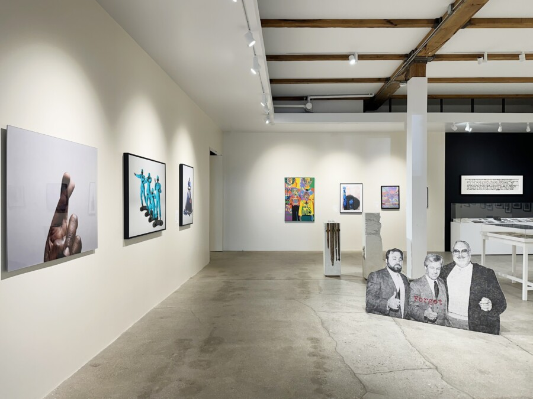

Continuing Resistance: A Century of Black Liberation (1925–2025)
Continuing Resistance: A Century of Black Liberation (1925–2025) positions artistic production within the Black radical tradition as an enduring site of political imagination and insurgent knowledge across a century of practice. Rather than framing resistance as episodic or reactive, the exhibition advances an understanding of resistance as a sustained praxis articulated through visual form, collective authorship, and the ongoing struggle for self-definition against regimes of erasure and containment.
Bringing together contemporary artists alongside historic photographs and ephemera from the Kavi Gupta archive, the exhibition traces a visual genealogy that extends into the present. Across media, these works insist on aesthetic practice as a mode of sovereignty: a space in which representation exceeds documentation to become an act of world-building, refusal, and self-determination.
Spanning generations, the presentation foregrounds the development of visual languages capable of holding both historical memory and speculative futurity. The exhibition proposes that Black liberation is not merely represented through art but materially produced by it; through images that preserve communal memory, contest dominant epistemologies, and expand the conditions of visibility.
Within this framework, artistic practice emerges not as symbolic response alone but as durable cultural infrastructure, continuing to shape the political, social, and imaginative horizons of the present.